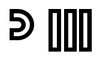

Hey there! I am José Moreira aka Peter Maui and I am a Multimedia artist. I graduated in 2020 in ESAD (Escola Superior de Artes e Design) finishing it with a 16.3 Average Values. I have academic skills at the level of Multimedia Design, Editing and Capture of video, 2D Animation, Project organization, Sound Design, Graphic Design; I can interpret and recognize various artistic aspects and I also have capabilities in Web Design (programming). I consider myself ambitious, pragmatic, creative and very curious about this professional side. I have an easy way to internalize and develop new contents; I can work as a team and communicate effectivetly with others. I have a strong spirit of initiative. I am very receptive, not only in entering the world of work, but also in deepening knowledge, preferably to the Front-End Development level. I speak fluent English and Spanish.
Possuo competências académicas a nível de Design Multimedia, Edição e Captação de vídeo, Animação 2D, Organização de projeto, Sound Design, Design Gráfico; Sou capaz de interpretar e reconhecer várias vertentes artísticas e possuo, também, capacidades em Web Design (programação). Considero-me ambicioso, pragmático, criativo e muito curioso relativamente a esta vertente profissional. Tenho facilidade em interiorizar e desenvolver novos conteúdos; em trabalhar em equipa, e em comunicar de forma efetiva com os outros. Tenho um forte espírito de iniciativa. Estou muito recetivo, não só em ingressar no mundo do trabalho, mas também em aprofundar conhecimentos, preferencialmente ao nível do Front-End Development. Falo fluentemente Inglês e Espanhol.